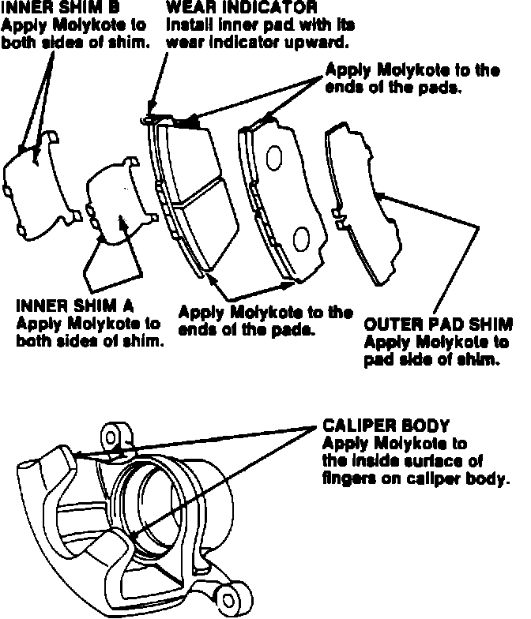
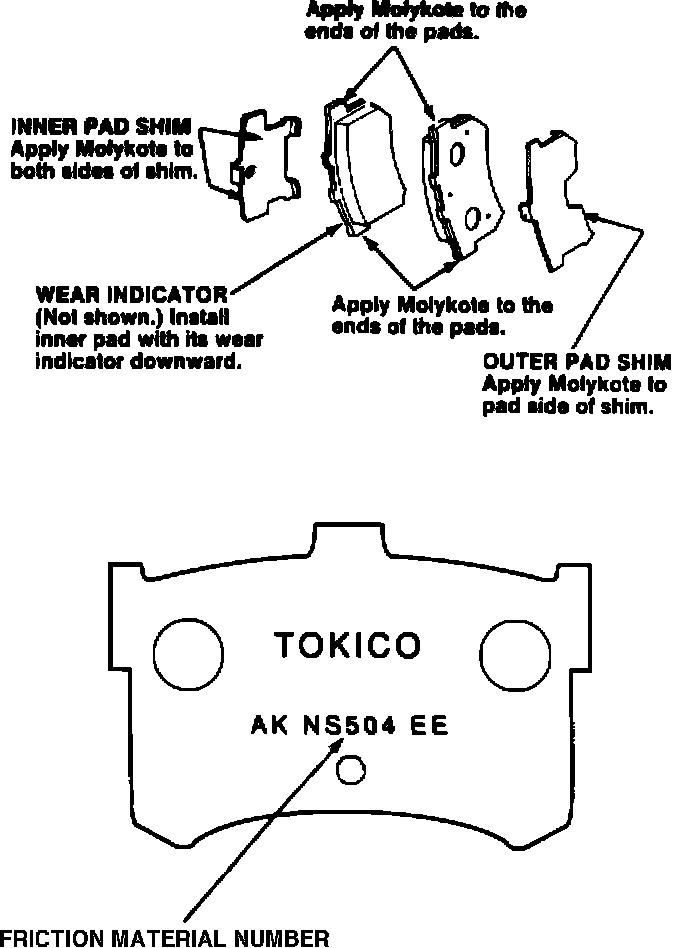

Brakes - Squeal Sound
89acura03YEAR MODEL
'86-88 LEGEND SEDAN
May 15, 1989
VIN APPLICATION BULLETIN NO.
ALL
87-028

Legend Brake Squeal (Supersedes 87-028, dated June 13, 1988)
PROBLEM The front or rear brakes make a squealing sound when the brakes are applied lightly.
NOTE:
^ Brake squeal, especially in the rear, is most noticeable when the brakes are cold.
^ Some brake squeal is normal as a result of differing driving habits and climates. This bulletin is intended to address only those cars which are considered to have excessive noise.
CORRECTIVE ACTION
For front brake squeal: Install new brake pad shims and lubricate the shims, pads and calipers with Molykote M77.

For rear brake squeal: Install the new brake pad set (includes new shims) listed under PARTS INFORMATION. (These pads are numbered "AK NS504 EE" on the back.) Lubricate the shims, pads and calipers with Molykote M77.
[WARNING] Inhaled asbestos fibers have been
found to cause respiratory disease and cancer. Never use an air hose or dry brush to clean brake assemblies. Use an OSHA-approved vacuum cleaner or alternate method approved by OSHA designed to minimize the hazard caused by airborne asbestos fibers.
NOTE:
^ If brake judder exists, resurface both front discs with the Kwik-Way Kwik Lathe and Power Feed, or the Snap-on Front Disc Brake Lathe and Power Feed. Secure the discs to the hubs with four lug nuts and flat washers, torqued to 118 N-m (80 lb.ft.). Disc resurfacing will correct judder, but has no lasting effect on squeal.
^ Replace the front brake pads if they are more than 50% worn (less than 4.0 mm thick, when measured to the wear indicator, or less than 7.0 mm thick, when measured to the steel backing plate).
^ Apply the Molykote M77 grease to each shim thinly and evenly. Grease must not contaminate the friction material.
^ Wear indicators are riveted on one end of each of the inside pads. Install the front pads with the wear indicator end up and the rear pads with the wear indicator end down.
^ Torque lug nuts to 118 N-m (80 lb.ft.). Excessive or uneven lug nut torque may cause excessive disc runout.
^ Break-in new pads by lightly applying the brakes and decelerating from 35 MPH to a complete stop. Do this 20 times. Do not overheat the brakes when performing pad break-in.
PARTS INFORMATION
Front:
Outer shim (2 required): P/N 45228-SD4-003
Inner shim A (2 required): P/N 45225-SD4-003
Inner shim B (2 required): P/N 45226-SD4-013
Molykote M77: P/N 43383-SA5-325AH
Rear:
Rear brake pad set: P/N 43022-SD4-306
WARRANTY CLAIM INFORMATION
Operation number: 410150 (front pads and shims) 410150A (front pads, shims, and resurface discs)
410160 (front shims only) 411150 (rear pads and shims)
Flat rate time: 1.0 hour (front or rear pads and shims)
0.7 (front shims only)
A: Add O.6 hour for resurfacing discs
Failed part: P/N 45228-SD4-003 (front) P/N 43224-SD4-005 (rear)
Defect code: 042
Contention code: B01
NOTE: Enter the dollar amount of Molykote M77 used under the materials section of the warranty claim.